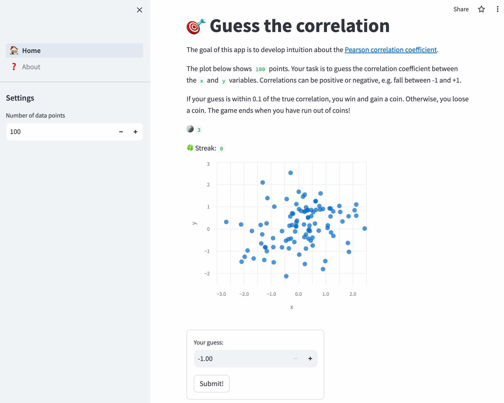

TL;DR
- I learned the basics of creating web applications with Streamlit
- Build your intuition about correlation coefficients in my first app here!
This week, I learned about Streamlit, a python module to rapidly develop dashboards and (simple) web applications. Having used Posit’s shiny framework in the past (using R), I enjoyed diving into a solution that uses python.
There are numerous comparisons between different frameworks to develop dashboards with python (e.g. this one ). Most recently, shiny for python has entered the stage as well.
To get started, I completed 30 days of Streamlit, short exercises that introduce key Streamlit elements.
Next, I tried my hands at coding a simple app from scratch. To challenge myself, I implemented a simplified version of Omar Wagih’s awesome Guess The Corrlelation game. A user is presented with a scatter plot and prompted to guess the (Pearson) correlation coefficient between the x- and y-variables.

True to its promise of “turning data scripts into shareable web apps in minutes” I was able to get a simple application up and running very quickly, with only a few lines of code.
Streamlit makes it easy to add form elements, graphs or markdown-formatted text to a web application. While shiny defines which elements need to be refreshed based on user input explicitly (see with reactive epressions ), streamlit simply reruns the entire script whenever a user interacts with the application. That took some getting used to, e.g. as variables are reset in the process.
To store selections and variables across reruns, the Session State a field-based API, is available, and I used it extensively:
# persistent variables
with st.sidebar:
st.subheader("Settings")
st.session_state["n"] = st.number_input("Number of data points", 2, 1000, 100)
if not "data" in st.session_state:
st.session_state["data"] = dataset(st.session_state["n"])
if not "cor" in st.session_state:
st.session_state["cor"] = correlation(st.session_state["data"])
if not "guessed" in st.session_state:
st.session_state["guessed"] = False
if not "streak" in st.session_state:
st.session_state["streak"] = False
if not "streak_length" in st.session_state:
st.session_state["streak_length"] = 0
if not "coins" in st.session_state:
st.session_state["coins"] = 3I also wanted to display two alternative buttons, either offering the user the option to submit a guess (Submit!) or to refresh the chart and start over (Try again!).
Controlling the conditional flow of the app was a bit of a challenge (for a beginner like myself), but eventually I was able to accomplish it through liberal use of the experimental st.experimental_rerun() command.
I deployed the final application in the streamlit cloud at https://correlation.streamlit.app/. (Any feedback is very welcome!)
Overall, I was impressed how quickly I could put together a dashboard, and I am looking forward to sharing analysis results and interactive plots with my collaborators in the future. For more complex applications, I will look into shiny (R/phython), Flask or Django instead.

This work is licensed under a Creative Commons Attribution 4.0 International License.